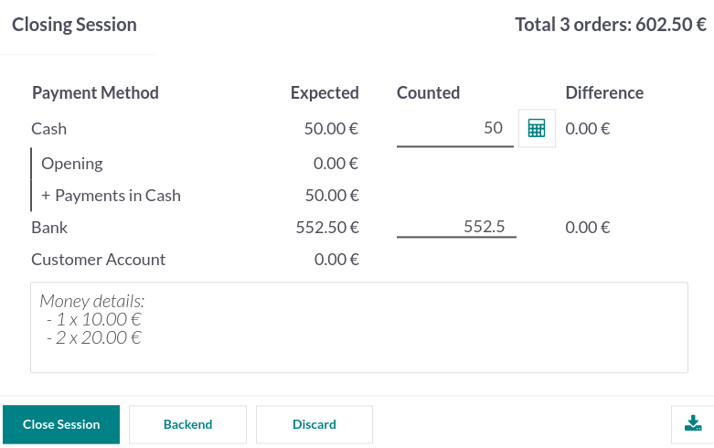

Punto de venta¶
Con el Punto de venta de Odoo es fácil gestionar tus tiendas y restaurantes. La aplicación funciona en cualquier aplicación que tenga un navegador web, incluso si no está conectado a internet por un momento. Los movimientos de inventario se registran de manera automática en sus existencias, podrá ver estadísticas en tiempo real, y sus datos se consolidan en todas las tiendas.
Iniciar una sesión¶
Desde el tablero de punto de ventas haga clic en Nueva sesión y en la pantalla Control de efectivo de apertura haga clic en Abrir sesión para iniciar una sesión en el PdV. También puede hacer clic en Continuar venta si la sesión ya está abierta.
Nota
Varios usuarios pueden trabajar en la misma sesión al mismo tiempo, pero solo puede abrir la sesión una vez en el mismo navegador.
Vender productos¶
Haga clic en los productos para agregarlos al carrito. Para cambiar la cantidad, haga clic en Cant. e ingrese el número de productos con el teclado. Para agregar un descuento o modificar el precio del producto, haga clic en % de desc. o en precio para ingresar la cantidad.
Una vez que se complete una orden haga clic en pago para proceder a la página de pago. Seleccione el método de pago, ingrese la cantidad recibida y haga clic en Validar. Haga clic en Nueva orden para ir con el siguiente cliente.

Truco
Como separador decimal, puede usar tanto
,como..La opción efectivo se selecciona de manera automática si ingresa una cantidad sin seleccionar un método de pago.
Nota
El sistema solo puede cargar un número limitado de productos para que la aplicación abra sin dificultades. Haga clic en Buscar más si el producto que necesita no aparece de forma automática.
Configurar clientes¶
Es necesario registrar a su clienta para poder juntar sus puntos de lealtad y otorgarle recompensas, aplicar la lista de precios correcta de manera apropiada, o generar e imprimir una factura.
Para crear clientes desde una sesión del PdV abierta haga clic en , e ingrese la información de contacto. También puede crear clientes desde el backend, solo debe ir a y haga clic en Nuevo. Llena la información de contacto y guarde los cambios.
Para elegir al cliente durante una orden, en la interfaz del Punto de venta haga clic en Cliente. También puede seleccionar al cliente en la pantalla del pago, solo haga clic en Cliente.
Notas del cliente¶
Puede agregar notas del cliente sobre productos específicos desde una sesión de punto de venta abierta. Por ejemplo, para dar consejos sobre limpieza y mantenimiento. También se puede usar para rastrear solicitudes específicas de los clientes, por ejemplo, es posible que no quieran que ensamblemos un producto por ellos.
Para hacerlo, seleccione un producto y haga clic en Nota de cliente. Se abrirá una ventana emergente en la que podrá agregar una nota o modificarla.
Nota
Las notas de un producto de una orden de venta importada se muestran tal cual en el carrito.
Las notas de los clientes también aparecen en los recibos y en las facturas, como aparecen en el carrito abajo de producto relacionado.

Regresar y reembolsar productos¶
Para regresar o reembolsar un producto,
inicie una sesión desde el tablero del PdV;
haga clic en Reembolsar y seleccione una orden correspondiente;
seleccione el producto y la cantidad a reembolsar con el teclado;
haga clic en Reembolso para regresar a la ventana anterior;
una vez que complete la orden, haga clic en Pago para avanzar al reembolso;
haga clic en Validar y en Nueva orden para seguir con el siguiente cliente.

Nota
Con la barra de búsqueda puede filtrar la lista de órdenes por Número de recibo, Fecha o Cliente.
Otra forma de reembolsar un producto es seleccionar el producto que se regresó desde una sesión abierta y ponga una cantidad negativa que sea igual al número de productos regresados. Para hacerlo, haga clic en Cant. y agregue +/- seguido por la cantidad de productos que se regresaron.
Cierre de la sesión del PdV¶
Para cerrar su sesión haga clic en Cerrar en la esquina superior derecha de su pantalla; así abrirá una ventana emergente de Control de cierre. Desde esta ventana usted podrá obtener mucha información:
el número de ordenes que se hicieron y la cantidad total que se ganó durante la sesión;
las cantidades esperadas agrupadas por método de pago.
Antes de cerrar esta ventana, haga clic en el icono de calculadora para contar su efectivo. Se abrirá una ventana emergente en donde se calculará la cantidad total en la caja registradora dependiendo de las monedas y billetes que se contaron y se sumaron de manera manual. Después, haga clic en Confirmar o en Descartar para cerrar la venta. La cantidad calculada estará en la columna Contado y los Detalles monetarios se especifican en la sección de Notas.
Una vez que haya terminado de controlar las cantidades, haga clic en Cerrar sesión para cerrar y regresar al tablero del PdV.
Nota
Si quiere dejar la sesión abierta haga clic en Backend o haga clic en Descartar para cancelar y seguir vendiendo.
Según su configuración, es posible que solo pueda cerrar sesión si el ingreso en efectivo esperado es igual al efectivo que contó. Para cerrar sesión aunque no coincida, haga clic en De acuerdo en la pantalla de Diferencia de pagos.
Truco
Es extremadamente recomendable que cierre su sesión del punto de venta al final de cada día.
Para ver todas sus sesiones anteriores, vaya a .